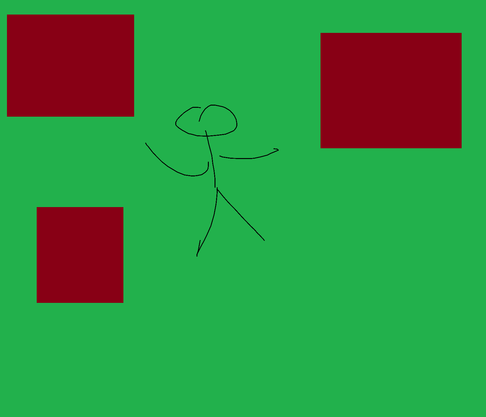

Carpet Games
It all stared on a carpet ...
Discover our first gameIt all stared on a carpet ...
Discover our first gameAbout Carpet Games
Carpet Games was born in the minds of two friends, Mariusz and Sebastian. Just a few years ago, board games were not part of our world. As passionate PC gamers, we considered them more as something “next to us”. Everything changed in 2023, when a friend invited us to an evening of board games. What surprised us the most was how much fun we could have and how different it was from playing on a computer screen. It was a completely new experience. A week later, we bought our first game, 7 Wonders Duel, and we still play it to this day.
In 2025, we discovered that our city library allows to borrow board games. This was a turning point in our lives! Throughout the entire first half of the year, we were testing new titles almost every week..
Interestingly, everything took place… on the carpet. →
Interestingly, everything took place… on the carpet. From the very first game we bought to the titles we borrowed from the library, we always played on the floor—never at a table. During these sessions, we began to look at games not only as players, but increasingly as creators. We analyzed game mechanics, introduced our own modifications, and observed how they affected the gameplay. Over time, loose ideas began to emerge: “What if we created something of our own?” With no plan and no concrete details—just conversations that gradually became more serious. We don’t even remember the exact moment when we started writing down our first ideas. We eventually realized we had amassed enough material to want to share it with others.
It was on the living room carpet that ideas, discussions, and the first sketches of game mechanics were born. When we began thinking about a name for the company, the answer was closer than we expected. After all, we had always played on the carpet. That’s how Carpet Games came to be. Not long after, the idea for our first game emerged—a project we are now developing under the title Skjaldborg.

Mariusz
Creator of the game idea and mechanic
Sebastian
Creator of graphics and illustrations
Skjaldborg
Game • History • Adventure
Skjaldborg is a two-player tactical strategy game set during real historical conflicts between 793 and 1066. With the Scenario Book, each campaign becomes a narrative of a specific battle and its participants, placing you on opposing sides of the battlefield as authentic rulers of Viking and Anglo-Saxon kingdoms.
At the heart of the game are tactical engagements on the battlefield. Unit placement is crucial, and the six positions on the board force careful offensive and defensive decisions. Every mistake can open the path for an assault on your ruler.
But Skjaldborg is more than just a war game. Gameplay is divided into years and seasons, while random events and shifting weather conditions can dramatically alter the situation on the front lines. It is a raw, realistic journey into an era when history was written on the battlefield.
Join the Community
Join to our community to participate in the development process of upcoming game, share your ideas, and connect with other board game enthusiasts.
Connect with fellow board game enthusiasts
Please write to us. Your opinion is very important.
Get in Touch